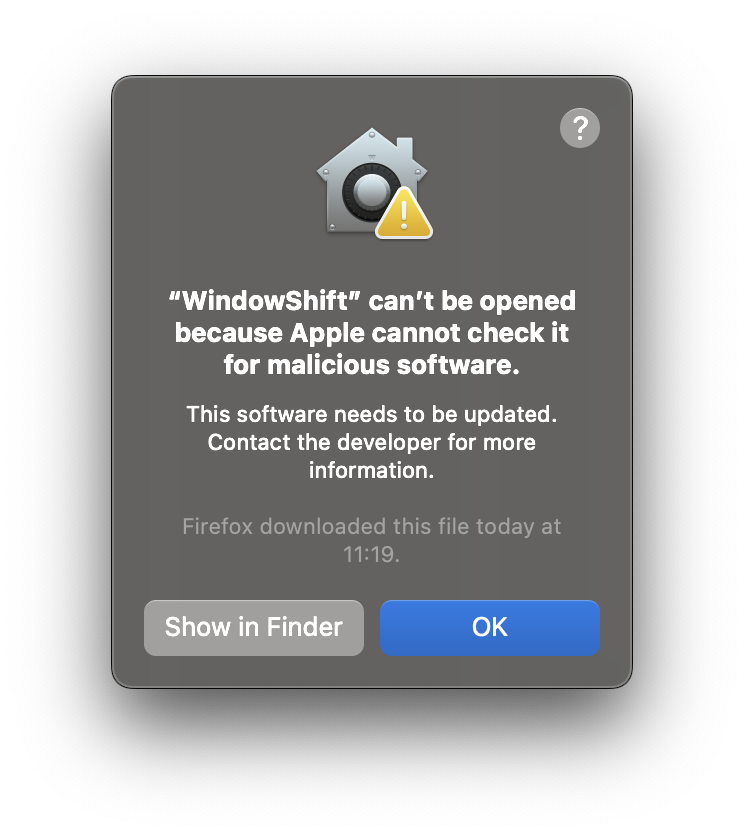
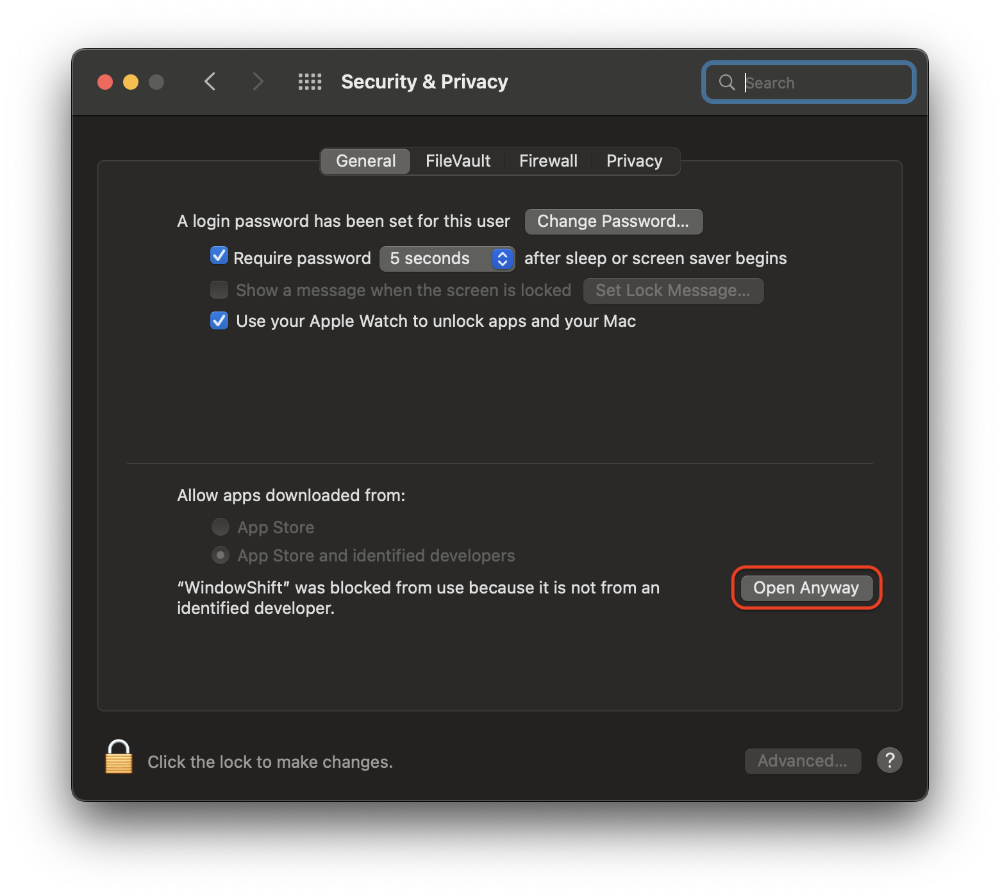
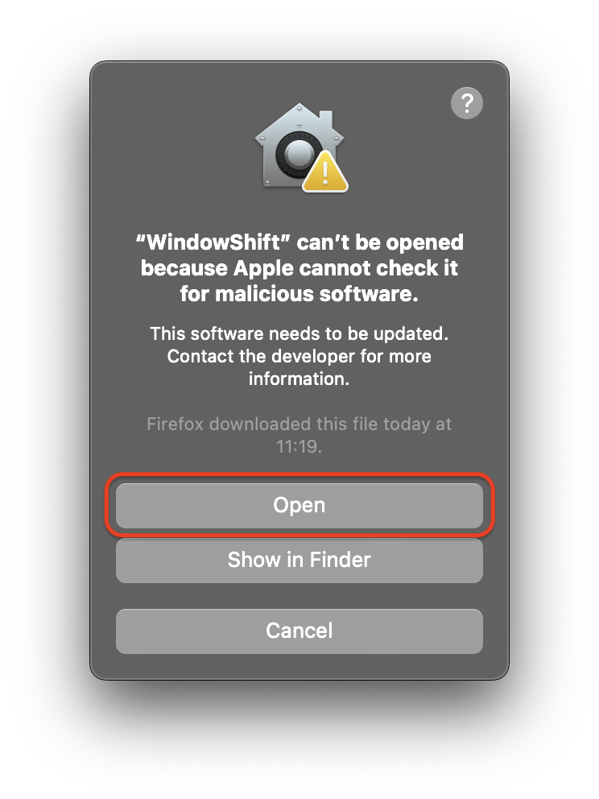

This does not mean that the app is malfunctioning or contains anything harmful. The reason is simply that Apple notarization requires a paid Apple Developer Program membership, and at the moment I do not have the spare money to pay for that subscription.
To bypass Gatekeeper and run the app, follow the steps below. The labels may vary depending on the macOS version.
Open the app once. macOS may tell you it cannot be opened because the developer cannot be verified.

Go to System Settings → Privacy & Security. Scroll down to the WindowShift message and click “Open Anyway”.

macOS will ask once more. Click “Open”. After that, WindowShift should launch normally.
